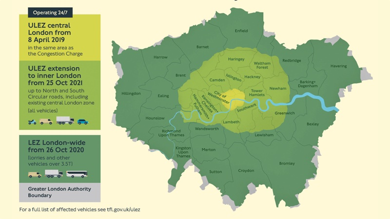
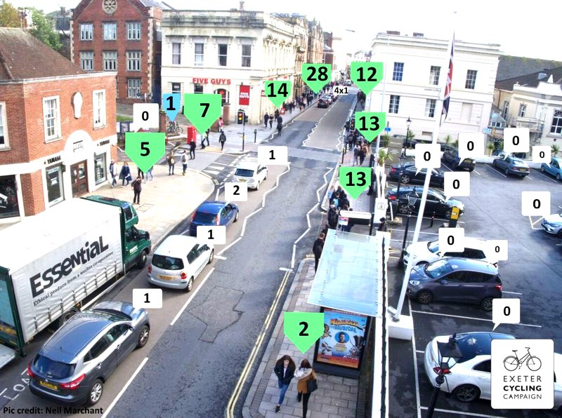

When the Met Office moved to Exeter in 2003, climate change had already emerged as a major existential threat and the IPCC was increasingly sure that human activity was causing it. A 2005 conference hosted here examined the impacts of different levels of climate change and concluded (among other things) that the rate of emissions reduction needed to keep global temperatures to a level that would avoid the most serious consequences would rapidly increase the longer it was delayed.
Following the Exeter conference, the Secretary of State for Energy and Climate Change increased the mandatory greenhouse gas emissions reduction level to 80% by 2050 in the landmark 2008 UK Climate Change Act. Emissions from aviation and shipping were also included during the bill’s passage through parliament.
At the time, opposition Conservatives and Liberal Democrats also supported the concept of a climate change bill, while proposing their own variations, and the Green Party wanted to go further, mandating a 90% cut by 2050 and setting interim annual targets.
Meanwhile, the IPCC won a Nobel Peace Prize for its work on its 2007 Fourth Assessment Report, which concluded that it was “very likely” (more than 90%) that most of global warming had anthropogenic causes, and the European Commission delivered binding legislation to implement its 20-20-20 targets.
The 2014 Fifth Assessment Report increased the likelihood to 95-100% and laid the basis for the Paris Agreement, which committed 196 states to keep the increase in average global temperatures “well below” 2°C above pre-industrial levels, and to pursue efforts to limit it to 1.5°C as this would significantly reduce the risks and impacts of climate change.
Yet within little more than twelve months of signing the agreement the US announced its intention to withdraw and it began to emerge that none of the other major industrialised nations were meeting their emissions reduction pledges. It also became clear that even if they did, global temperatures would not remain below 2°C and would instead rise by 3°C or more.
Climate Action Tracker June 2019 update. © Climate Analytics, Ecofys & NewClimate Institute.
Then came the IPCC’s special report in October last year. Its key finding was that meeting a 1.5°C target remained possible “within the laws of chemistry and physics”, but would require drastic action to achieve “deep emissions reductions” via “rapid, far-reaching and unprecedented changes in all aspects of society”.
It also said that average global temperatures were likely to have risen by 1.5°C in as little as eleven years if warming continued to increase at the current rate, at which point there would be increased risks to “health, livelihoods, food security, water supply, human security and economic growth”.
Extinction Rebellion was launched less than a month later. By the end of November, thousands of people had blockaded London’s principal river bridges in protest at government failure to act more decisively and the international school strike for climate movement had begun, inspired by a Swedish teenager protesting outside her country’s parliament.
Climate and the environment have since surged even higher up the political agenda, partly because of continuing protests and partly because of a series of publications from major organisations.
In January the World Economic Forum said that extreme weather and climate change mitigation failure represent the planet’s greatest risks, warning that “the world is … sleepwalking into catastrophe”.
In February an IPPR meta-study concluded that “the window of opportunity to avoid catastrophic outcomes in societies around the world is rapidly closing”. These include “economic instability, large-scale involuntary migration, conflict, famine and the potential collapse of social and economic systems”. A few days later the UK experienced its hottest ever winter day, ten degrees above average for the time of year.
In April, Carbon Brief analysis revealed that children born this year will have lifetime carbon budgets 90% lower than those born in 1950 and a BBC climate change documentary reached millions of people just as renewed Extinction Rebellion activism in London reached its peak.
In May, the UK government’s Committee on Climate Change confirmed the urgency of the need for the transition to net zero emissions and a UN Global Assessment Report said that human society was under urgent threat from the accelerating decline of Earth’s life-support systems.
So far in June we have heard that last year’s increase in atmospheric carbon dioxide was the second highest in the past 60 years, that the first global study of plant extinctions found they are taking place at a rate around 500 times higher than before the industrial revolution, and that carbon emissions from the global energy sector are rising at the fastest rate since 2011.
Unsurprisingly, public concern over these issues has reached record heights, particularly among young people, with two thirds of Britons now wanting urgent political action to tackle climate change and protect the natural world.
Exeter Youth Strike 4 Climate at County Hall
So when the first Youth Strike 4 Climate took place in Exeter on 15 February this year, some of the thousand or so school children and students who assembled at County Hall (the UK’s fourth largest turnout) might have felt reassured when Devon County Council declared its support for their aims.
However, the county council had welcomed a £55 million government “funding injection” the day before, much of which is to be spent on roads, and less than a week later filleted a climate emergency motion proposed by Green Party councillor Jacqui Hodgson, removing most of its substance and all references to a 2030 deadline to shouts of “shame” from the public gallery.
A similar motion proposed by Green Party councillor Chris Musgrave met with the same fate a week later at the hands of Exeter City Council, which removed all mention of a climate emergency altogether, using the word “ambition” four times to describe its position.
Devon County Council subsequently convened a Devon Climate Emergency Response Group, which it said would “act now to tackle (the) climate emergency”, and backed a Devon Climate Declaration and the preparation of a Devon-wide Carbon Plan.
However, it was then reported that the county council cabinet member for community, public health, transportation and environmental services said it could take around eighteen months to draft and adopt such a plan.
Does the declaration contain an unambiguous commitment to decarbonise Devon, based on formal policy, with specific targets? It “sets out an ambition to tackle climate change that covers all of Devon” and proposes to “lead in the global response” but only promises to review signatory organisation carbon reduction plans and engage with residents, businesses and visitors to develop and implement yet more plans. Planning to do something is not the same as achieving it.
More worryingly, the county’s chief executive, who is also chair of the climate emergency response group, seemed to say during an update at June’s cabinet meeting that collaborative “energy and enthusiasm” and “a lot of science” centred on “clean growth” and “green technology” would be sufficient to “make a real difference”, apparently not realising that successfully facilitating the kind of transformation entailed by decarbonising the county will depend more on persuasive political leadership than policy-making in committee.
Two days later Devon County Council announced its support for an upgrade to the A303.
 South West strategic road network congestion. Photo by osde8info.
South West strategic road network congestion. Photo by osde8info.
Exeter City Council has, following its new leader’s U-turn on declaring a climate emergency, presented its approach to emissions reduction in a document authored by Exeter City Futures called Towards a Carbon Neutral Exeter.
Unfortunately, this is another plan to make a plan, in this case based on twelve goals previously laid out by Exeter City Futures, none of which have a delivery date and only one of which has a meaningful measurement metric that would allow confirmation of its completion, and a 2017 Energy Independence report produced by Exeter-based City Science. The plan proposes the creation of three teams, one to research and plan, another to assess and endorse its outputs, and a third to help the first with its research.
The 142 page energy independence report appears substantial at first sight, but important issues arise when it is used as a basis for statements made in the city’s proposals. They claim it “shows the technical feasibility of a zero carbon city” but it excludes the “energy used in the wider consumption footprint of the city, for example, foreign energy used and transportation energy that forms part of the existing food supply chain” in its energy independence definition. Neither aviation nor shipping are otherwise mentioned.
The proposals also claim the energy independence report shows that finance is a particular barrier to emissions reduction, but its analysis does not give equal consideration to the three major barriers that it identifies.
While it focusses considerable attention on technical barriers, and often discusses financial barriers, it frequently (perhaps understandably) passes over political barriers without giving them the attention their relevance deserves. The report also largely passes on the task of assessing how the region can reduce its transport emissions to a companion, as yet unreleased, study.
The city council’s proposals also rely on a very cursory consideration of approaches to carbon reduction elsewhere as basis for the claim that “very few of these cities have to date set out clear, deliverable plans” to achieve their targets.
It takes the recently-founded Carbon Neutral Cities Alliance, which has only 19 city members, as its starting point instead of the long-established C40 cities network, which is comprised of 94 affiliated cities that between them account for 25% of global GDP and represent 1 in 12 people worldwide. Nine of the C40 cities have already passed and begun to implement detailed Paris Agreement-compatible action plans and 83 are committed to its Deadline 2020 programme, meaning they will pass and begin to implement such plans before the end of 2020.
There are also significant exemplar cities (and whole countries) outside these international groupings which offer additional perspective on Exeter’s situation. One such is Rekjavik, which is the same size as Exeter while also being co-located with rich renewable energy resources, from which Iceland has been generating all its energy since 2012.
Indeed, much can be learnt by comparing Exeter with other places which are leading the way. The single biggest elephant among a small herd to be found in this room, however, is that significant progress in other places has characteristically been enabled by entirely different governance and public finance arrangements from those in place here, typically with a single public authority determining and delivering across most or all relevant sectors.
Exemplar cities outside the UK often also benefit from much greater decentralisation from national government, direct control over local taxation revenues and more generous funding support, as well as key utilities still being in public ownership. It is also clear that what has catalysed change in many of these places is political will.
The city council’s proposals also overlook another significant issue, which is that many of these leading locations embraced change long ago, some as far back as the 1960s, when plenty of time was still available to build consensus for radical approaches that now need to be rushed.
Exeter’s rapid economic and spatial development is already in conflict with the need to decarbonise. Should its enthusiasm for a new Ikea superstore have been tempered with a recognition that the 1.8 million shopping trips it generated in its first year, so many that its 1200-space car park cannot cope with demand on busy days, might undermine the city’s often-repeated “aim to be the global leader for addressing the challenges of climate change and urbanisation”?
Copenhagen’s car-free streets & slow-speed zones by Streetfilms.
The principal weakness of the approaches to decarbonisation that county and city are proposing, however, is that they require time we no longer have to devise the kind of action plans others began implementing long ago. Instead of continuing to procrastinate, we could actually get on with doing the things that we already know we need to do, at scale, based on successes elsewhere. Many of these are quick, cheap and popular (although some less so until after they’ve been implemented).
Ongoing research and planning, especially for the really difficult and currently intractable challenges that lie ahead, such as decarbonising aviation, is obviously still necessary. But we do not need to spend months working out detailed methodologies for measuring baseline emissions in complex spatial contexts such as Exeter and its surrounding subregion in order to immediately increase the rate at which we reduce our carbon emissions.
No-one needs to know the amount of carbon dioxide their car emits when they drive it to know that not to do so will mean it will emit none. Nor do they need expert insight to understand that catching the bus instead will be a better choice. Or that cycling or walking to and from their destination would be better still, if it is possible and other factors do not deter them.
As Molly Scott Cato, recently re-elected as Green Party MEP for the South West, says: “What we have to do is everything we can as fast as we can: we already know what those things are. People have said they’re supporting the climate emergency, now they have to follow through.”
Those who are not engaged in public policy-making (or holding those who make it to account) might not know what those things are, or have a detailed understanding of how we got to where we are, or how serious the consequences of not rapidly addressing the challenges we face might be.
However, those who occupy leadership and senior decision-making and delivery positions, whether in the public, private or third sector, should already know. They should already be sufficiently familiar with the situation not to need to postpone action at the eleventh hour so as to spend the best part of the few remaining minutes before midnight forming an action plan. The clock will strike twelve much too soon for such prevarication.
Warnings about climate change and its consequences have become increasingly insistent during the working lives of both city and county council leaders and their chief executives. All bar one have occupied influential positions at the most senior levels in the region since the milestone 2008 Climate Change Act, the other returning to Exeter politics three years later.
Presuming they have all been aware of the work of the Met Office since it moved here in 2003, especially given how keen all are to promote Exeter’s “world-class reputation in climate and environmental research”, why have they not acted more decisively already?
Local authority leaders and their officers typically direct this kind of question towards lack of financial or political support from higher-tier authorities in turn, whether or not both administrations are led by the same political party.
Is additional government funding always necessary to enable change? Is government policy support always lacking? A glance at transport, the UK’s principal source of carbon emissions and Exeter’s most significant public policy challenge, suggests not.
 London ultra low emission clean air zones
In 2015, the UK Supreme Court ordered ministers to take immediate action to cut air pollution. The resulting air quality plan failed to comply with the Supreme Court ruling or relevant EU Directives so ClientEarth, the law firm who brought the first action, went to the High Court and won again.
The Department for Transport and Department for Environment, Food and Rural Affairs responded with a revised air quality plan in 2017. The technical report on which this was based states that deterring polluting vehicles from city and town centres is by far the quickest, most cost-effective way to cut levels of nitrogen dioxide pollution. The same approach also decisively reduces motor vehicle carbon emissions and traffic congestion, enabling effective bus travel and supporting route expansion, improves road safety, enabling increased cycling levels, and transforms the public realm, enabling higher levels of walking. All of which combine to improve public health too.
The clean air zones the government proposes in its plan are a variation on type of low emission zone that has been in force in London since 2008 and exists in more than 200 other towns and cities in Europe. Whole regions are included in such schemes in Italy. An ultra low emission zone has recently been introduced in central London, which will be expanded to include the whole of the area inside the North and South Circular roads from October next year. These zones are distinct from the London congestion charge area, which continues to operate in tandem with the zones.
London’s ultra low emission zone has been an immediate success. In the first month of operation 9,400 fewer of the most polluting vehicles entered the zone each day compared with the previous month. There were 36,000 fewer of these vehicles than there had been in February 2017, when the zone was announced.
Other UK cities are beginning to introduce similar zones, and Oxford is notably proposing a part-time zero emission zone in the city centre from 2020 which will incrementally increase its restrictions until a complete ban on all combustion engine vehicles will come into force in 2035.
This is five years earlier than the government’s plan to ban the sale of such vehicles, but five years later than the Committee on Climate Change recommendation to phase them out. Hybrids will have to be included in the ban to reach the UK’s carbon reduction targets.
Exeter, like Oxford, has a two tier local government structure that means the city’s transport strategy is decided and delivered by the county council. This arrangement creates problems on both sides, including that the Labour county councillors returned by most of the city have little influence over decisions made by Conservative county councillors returned by voters who live outside the city and depend on motor vehicles to access the its employment and leisure opportunities.
As Exeter’s travel to work area has expanded to become the second largest in the UK (after Cambridge) inward commuting has risen fast. By the 2011 census 48% of the city’s workforce lived outside its borders: the figure is now likely to be much higher.
However, air quality is a statutory responsibility for both city and county, so it presents an ideal opportunity for both to excel at the kind of collaborative partnership working they frequently extol.
An Exeter clean air zone that starts as a part-time low emission measure from 2020, with managed exceptions to allow adaption by, for example, bus service operators, and gradually increases its scope and reach over ten years to a full ban on all non-zero emission vehicles by 2030 would constitute a carbon reduction partnership-defining act for both local authority tiers while supplying needed substance to Exeter’s leadership claims. Where does each currently stand?
 Exeter Queen Street mobility mode distribution. Image via Exeter Cycling Campaign.
Devon County Council’s 2018 climate change strategy confirmed that the county’s carbon emissions come primarily from transport (agriculture produces the largest total greenhouse gas emissions) and focussed on potential emissions reductions from transport, buildings, energy and waste (following Committee on Climate Change guidance).
However the county council can largely only indirectly facilitate improvements in buildings and energy at any scale, and only deals with waste disposal and not collection, so its principal impact potential is in its role as highways authority.
It is therefore rather surprising to realise that neither the county’s climate change strategy, nor the University of Exeter review of the previous strategy on which it is based, nor indeed the recent Devon Climate Declaration mention either low emission or clean air zones, congestion charging or air quality once.
At the same time, the city council’s 2018 air quality action plan only mentions congestion charging to say that the county council previously ruled it out “largely on cost grounds”, adding that a clean air zone is “seen as not sufficiently flexible to meet Exeter’s needs”.
Exeter Green Party strongly criticised this plan, particularly on the basis of independent air quality analysis it had commissioned which showed that the city was much more polluted than suggested by council monitoring figures. It also criticised what it called the “misuse of data” from the plan consultation, which showed that 41% of nearly 3000 respondents supported a Workplace Parking Levy, with 34% opposed, on which basis the idea had been ruled out.
A workplace parking levy scheme introduced by Nottingham City Council (a unitary authority) in 2012 had a “statistically significant impact on congestion” while generating annual revenues of £9 million which are reckoned to leverage a further three times as much investment, effectively bringing in £36 million each year.
The money has helped fund tram extensions, support the bus network and introduce cycling schemes and has contributed to railway station redevelopment in the city. Hounslow, among other places, is considering a similar scheme which it estimates could raise £44 million to pay for new rail links in the area.
In addition, Devon County Council’s 2019 Exeter transport strategy consultation, the outcome of which is expected in September, was based on a draft document that only mentioned vehicle emissions once and did not mention either low emission or clean air zones, congestion charging or climate change at all.
Incredibly it did however say it aimed to “facilitate the increase of car-based inward commuters from outside the city”. There are no prizes for guessing it did not mention workplace parking levies. Neither the response from Exeter Green Party nor the city council left room for doubt that the county must make radical changes to its outlook.
Extinction Rebellion at Oxford Circus. Photo by Mark Ramsay.
Since Devon County Council decided against a congestion charging zone for Exeter, circumstances and public opinion have changed. An Exeter clean air zone supported by free park and rides at the furthest reach of all the city’s radials, like Oxford, would meet many important challenges the city faces head on without creating perceived economic injustice (as charge-based congestion zones can).
A workplace parking levy, like Nottingham, would raise the revenue needed to pay for the clean air zone’s creation and administration, before gradually becoming obsolete as the zone incrementally increased vehicle access restrictions.
Busy park and rides would offer their own one-stop service revenue-raising opportunities while many non-retail businesses that currently require freight servicing inside the zone will move to the other side of the M5 as Marsh Barton and Sowton are redeveloped for housing too.
These would be the sticks to accompany the nudge theory-based carrots that the county council employs to avoid grappling with collective action problems by “encouraging” individual people to change their behaviour instead.
The evidence from successful motor vehicle use reduction schemes elsewhere is that nudges won’t work without the disincentives supplied by the sticks, but as the city’s air quality action plan consultation confirmed that large majorities back the reduction of private car use, the expansion of park and ride sites and think that air quality should be treated as a public health priority, shaking these particular sticks should not prove electorally onerous.
Why is serious consideration of such a combined scheme absent from the county’s climate change strategy and climate declaration and dismissed in passing in the city’s air quality action plan, when government policy and technical evidence support it so strongly? Why would the county’s transport strategy consultation draft propose to “facilitate the increase of car-based inward commuters from outside the city” when Exeter residents already pay for such change with polluted air, congested streets, damaged public realm and loss of land to car parking despite choosing to walk and cycle instead of drive themselves?
A willingness to reconsider existing interventions that have been effective elsewhere and committed leadership to promote their viability and value is needed to address these questions.
Groningen: the world’s cycling city by Streetfilms.
No doubt many will need time to adjust to the idea of a zero emission zone coming into force in Exeter, just as they may to accept that emissions from all combustion engine vehicles whose movement centres on the city, including buses, trains and aircraft, as well as the emissions from its consumption supply chain must all be included in the city’s transport carbon footprint. And so reduced to net zero in just over a decade on current plans. It is striking, if unsurprising, that the impact of Exeter airport is currently absent from most discussions of the issue, including the city’s ostensibly progressive zero carbon proposals.
However many minor low-cost interventions are possible that multiply over time to bring stakeholders with them as public opinion moves from sceptical to convinced. Pontevedra (in Galicia, where it rains a lot too) has reduced motor traffic by 97% over ten years with such tactics. It used to have about the same number of cars travelling through it each day as Exeter does now.
Amsterdam has begun implementing a plan to replace 10,000 on-street car parking spaces in the city centre with play areas, bike lanes and community container gardens. This is about the same number of car parking spaces that Exeter has now. The city has also pledged to ban petrol and diesel vehicles by 2030.
Dutch women are already 80 times more likely to cycle than British women because their streets are so different to ours, a figure which is set to rise. Retailers benefit everywhere such schemes are introduced.
Exeter Cycling Campaign produced a detailed modal filtering and rat-running prevention analysis at the county council’s request in 2017, which contained multiple low-cost recommendations that would make a significant cumulative impact, none of which have so far been implemented. It has also since produced a report listing almost 150 minor improvements that would enhance access to walking and cycling across the city.
It is about time the county council recognised the value that these crowdsourced efforts represent by following through with action. It is also time it produced the Local Cycling & Walking Infrastructure Plan it was asked for in the government’s 2017 Cycling & Walking Investment Strategy on which future related funding depends.
Simply closing roads to motor traffic costs almost nothing yet has major impact, instantly transforming urban space. Even single road closure helps a little, even if only on a single day, especially when such days occur regularly so people become accustomed to the change.
Edinburgh’s recent decision to join the Open Streets movement has not only been prompted by the desire to create better public realm in the often-congested city. And London has just announced its largest car-free day to date, when more than twelve miles of roads will close.
Repurposing a couple of hundred yards of Magdalen Road for a Sunday afternoon street party is welcome, but it doesn’t go nearly far enough. Car-free Sundays every weekend inside the old city walls and play streets in every area of the city would be more like it: these are what catalysed the Netherlands’ subsequent transformation in the 1970s.
Shared streets are well-established elsewhere, there is no reason why they should not be here too. A few planters are all you need to start.
Amsterdam to remove 10,000 parking spaces by Streetfilms.
Where highways authorities do choose to prioritise spending on cycling and walking infrastructure, modal shift soars. Unfortunately, Devon County Council is currently only allocating 7% of its highways capital spending budget to cycling schemes, just over £2 million, most of which is spent on leisure routes and not interventions that will help commuters leave their cars at home. This is less than half the 15% called for by the government in 2018.
Meanwhile, many millions are being spent on roads in and around Exeter. The A380 Kingkerswell bypass cost £110 million, excluding the 800 compensation claims from those living nearby it has since generated because the road has reduced the value of their homes. The A361 North Devon link road scheme is a £93 million project to widen a five mile stretch from Barnstaple to South Molton.
£55 million is to be spent on infrastructure to support housing development in South West Exeter between Alphington Village and Exminster, which will include widening the A379, upgrading roundabouts and realigning existing roads. £13 million is being spent on improving the A382 between Forches Cross and Newton Abbot, and a proposed new road between the A382 and A383 through the Houghton Barton development area near Newton Abbot will further extend the scheme.
Widening Bridge Road in Exeter cost £5.3 million, redeveloping the A379 Newcourt junction cost £2.3 million, junction improvements at Moor Lane roundabout are to cost £2.2 million and £3 million is to be spent widening Long Lane near Exeter airport to support the development of a new 17 acre business park and “the future growth of the airport”.
A new scheme to upgrade the A379 is likely to cost £25 million alongside another half a billion pounds of proposed road spending across the South West. Improved journey times and road safety are offered as primary justification for almost all these projects.
Compare all this with the long-delayed Marsh Barton railway station, which was originally due to open in 2016 but now may never be built. Then consider the phenomenon known as induced demand and its application to transport, observed for the first time as long ago as 1925 and repeatedly demonstrated in numerous authoritative studies since: one might paraphrase it as “building roads to cure congestion is an exercise in futility”.
It should come as no surprise, then, that despite all this spending, Exeter still has the slowest moving roads in the country.
Improving public transport is unavoidably necessary in and around the city. Doing so would also dramatically improve our poor productivity. However, it will only result in reduced congestion (with all the attendant benefits outlined above) if other drivers are prevented from filling the space created by more people using buses and trains. No matter how else we might hope to address Exeter’s transport problems, we will only succeed by removing cars from the city’s roads.
In fact, they will already be free of combustion engine vehicles by 2030 if it meets its proposed decarbonisation deadline, unless the ambiguous statements in the city council’s proposals about “framing” Exeter’s emissions reductions target to link with (later) wider regional targets are intended to allocate the impact of the traffic that floods into city every day from outside to other local authorities, or to pass responsibility on for the traffic that starts in the city and heads to employment sites outside its boundaries.
While the incremental introduction of a zero emissions zone around Exeter’s edges over the next ten years may seem absurdly ambitious to some, it represents low hanging fruit compared with some of the branches we will need to reach to reduce the city’s carbon footprint to zero by 2030.
Unless we are to accept the farcical prospect of commuters with combustion engines driving into and through Exeter for the following twenty years, which would be commensurate with current county council and government plans (petrol and diesel cars will still be on sale to 2040), we must begin reclaiming the city’s streets now with the means that are already available.
Life on a Dutch Living Street by Streetfilms.
One might wonder, then, why Devon County Council persists in allocating its strategic transport resources without this purpose in mind, let alone its additional £54 million highways maintenance budget. As above, its leaders and their officers typically direct this question towards the higher-tier authority in turn.
The Conservative government’s record on transport policy is lamentable. Since the party won a majority in 2015 it has decided to spend £14 billion extending Heathrow airport, which will require the construction of nearly 50,000 car parking spaces. It has scrapped mainline railway electrification projects and has overseen a year on year fall of 85 million bus passenger journeys to the lowest levels since records began. It has even decided to scrap a cycleway that was planned alongside the HS2 route which would have delivered a return on investment up to five times greater than the rail project itself.
It has continued to promote the value of electric cars despite them doing nothing to address congestion while still producing significant environment impact (including toxic emissions) and depending on increasingly scarce minerals for their production. There are currently only around 200,000 electric vehicles in the UK, so tens of millions of existing cars will need to be replaced, but the charging infrastructure that will be required to supply them is in short supply and needs rapid expansion as well as investment in additional energy production capacity to the tune of well over £100 billion. It has scrapped subsidies for hybrid vehicle purchases and reduced those for all-electric cars, leading to slower take-up, and more than a quarter of local authorities have stopped adding charging points after funding cuts to council budgets.
The government’s energy record is just as bad. It scrapped the feed-in tariff on the basis it would reduce annual household electricity bills, but then admitted it might only save customers 50p a year. In the month after the scheme closed, May 2019, the number of home solar panel installations fell by 94% and the sector’s union reported that there had been a 30% drop in renewable energy jobs between 2014 and 2017. It also cancelled subsidies for onshore wind despite it being the cheapest source of energy in the UK and has effectively blocked all new onshore installations despite consistent support from three-quarters of the public (including those living near turbines).
It has promoted fracking proposals that would emit the same amount of carbon dioxide as 300 million new cars despite the High Court ruling that it had failed to consider their impact on climate change and has recently been rebuked by its own environmental audit committee for spending millions of pounds on subsidising fossil fuel-burning projects abroad.
In addition it has not only scrapped plans inherited from the previous Labour government to make all new homes zero carbon from 2016 but also its own flagship “green deal” home insulation scheme despite poorly-insulated UK housing stock being among the most expensive to heat in Europe. It won’t even introduce a 1p per item tax on fast fashion to help clean up its enormous environmental impact despite a trade survey showing that 69% of the industry support the charge.
Unsurprisingly, there has been a marked slowdown in UK carbon emissions reduction rates after easy early gains made by closing coal-fired power stations, and some sector emissions are rising. Even though it took place after the first UK school strike, parliament’s first debate on climate change in two years was only attended by a handful of MPs. A few more MPs were present when the Labour Party then used an opposition day motion to declare a (non-legally binding) climate emergency the day before the local elections took place, but the motion only passed because the government chose not to oppose it and not because of a decisive vote.
When Theresa May subsequently amended the 2008 Climate Change Act (by statutory instrument, also not entailing a vote) to commit the UK to net zero emissions by 2050, she explicitly ruled in the use of carbon credit offsets, ignoring Committee on Climate Change recommendations to the contrary, failed to mention the overdue inclusion of aviation or shipping in carbon budgets and allowed a five year “get-out” clause which would give the UK the option to abandon the target if other countries do not take similar action.
This week’s announcement that a citizen’s assembly on climate change will take place this autumn is similarly evasive: predictably, its findings will not be binding. And those who have been demanding it might wonder whether it will take place at all under the new Conservative Prime Minister. Both Jeremy Hunt and Boris Johnson’s leadership campaigns have been funded by a company linked to the Global Warming Policy Foundation, a major climate science denial group.
Heathrow airport. Photo by Sebastian Grochowicz.
So while local government officers may claim they are simply doing what they are told, as non-partisan professionals, or explain that funding has been redirected towards other government policy priorities, such as from the highways budget to the Heart of the South West Local Enterprise Partnership, it is very difficult to see how county councillors elected on a Conservative Party policy platform can credibly claim to be determined to tackle the climate crisis when their party’s record looms over them and more than a quarter of their prospective new leader’s supporters want to see less emphasis on the issue.
Nor can Labour city councillors claim an unimpeachable party record: its members voted for Heathrow airport expansion, backed the new deep coal mine in Cumbria and contracted the felling of thousands of trees in Sheffield. Bizarrely, Exeter City Council this week introduced free car parking which will encourage more driving in the city centre on Thursday evenings, then led a clean air promotion the next day with “transport is by far the largest contributor to air pollution”.
The leadership challenges that are entailed by the climate crisis need so much more than the business as usual approach that is being adopted at city and county level. If we take the recent local council and European Parliament elections as a guide, it would seem as if Devon’s residents agree. Across the eight districts overseen by Devon County Council, the Conservatives lost nearly 44% of the local council seats they previously held, losing control of Teignbridge, East Devon, Mid Devon, North Devon and Torridge district councils and sustaining reduced majorities in West Devon and South Hams. They also performed badly in the European elections, losing between 23.8% and 28.7% of their vote share across the districts, typically coming in fourth or fifth place.
Labour also fared poorly in Exeter, where it runs the city council. Its vote was down 22.5% from the 2018 local elections and it came fourth in the European elections, down 15.2%, in a result which saw the Greens come within less than a percentage point of beating the insurgent Brexit Party.
The Liberal Democrats gained seats on every district council, doing well in some areas with independent candidates doing well in others, one notably in Exeter. Greens now have seats in every district authority area except Teignbridge, with Exeter’s lead Green Party candidate received more votes than anyone else standing in the city.
However you interpret these results, there is no doubt that the political landscape is in flux at every level. With soaring public concern about the environment on one flank and unwavering Brexit support on the other, the Conservative Party’s electoral woes are likely to continue in the May 2021 county council elections, especially as thousands of currently disenfranchised young people across the county who care passionately about climate change will be voting for the first time.
And while the voting by thirds electoral cycle in Exeter makes it virtually impossible for the currently dominant Labour group to lose power at the next round of elections in 2019, and the following year will be fallow while the county elections are held, the odds on further Exeter Labour vote losses will shorten as the Clifton Hill sports centre site comes up for sale, the financial folly known as St Sidwell’s Point rises from the ground opposite the council’s offices and the city’s streets continue to fill with traffic.
Exeter Youth Strike 4 Climate leave a message for Devon County Council at County Hall
For city, county and country, the challenge is the same. How can a nation that has failed to deal with significant structural problems for the better part of half a century transform itself into a progressive, prosperous social democracy in which the everyday lives of its people match the rhetoric of its leaders?
Even courageous honesty about how ill-prepared we are to make the transition to a just, zero carbon society would help: the scale of the transformation that is required is far greater than the changes wrought by Thatcherism. But like the student climate network activist who asked a clutch of Conservative leadership candidates whether they would commit to the action necessary to tackle climate change on television on Tuesday night, all we get are platitudes.
Instead, we should be going much further than mere ambition to do the bare minimum, especially if Exeter’s global climate change leadership aspirations are to be borne out on the ground. We should be including other important considerations, such as global economic and social justice and the historic impacts of the British empire and industrial revolution, in expertly-informed decisions about how we definitively decarbonise sooner rather than later.
In the same way as wealthy people have little excuse for their environmental impact because they have more choice over how to live, wealthy places have greater responsibility to make faster and deeper carbon emissions cuts so poorer places get more time to manage change with fewer resources.
The challenge for those in leadership positions in such places is that they must act immediately to enable carbon emissions reductions that are as rapid and as comprehensive as is technically feasible, not procrastinate because of perceived cost or political timidity. To ask for more time to plan future change that is needed now is to acknowledge that they don’t already know what to do. But they have already had plenty of time to understand the challenges entailed by climate change and to learn how to meet them.
If they either do not understand the facts of the matter or the urgency of the situation, or prefer to fiddle while the planet burns for fear of repercussions from decisions they must take for all our sakes, they should ask themselves whether they are cut out for leadership roles in the circumstances we face. There are others who do know what to do and want to act now.
In any case, as climate change activists from an earlier era used to say, we are more possible than they can powerfully imagine.